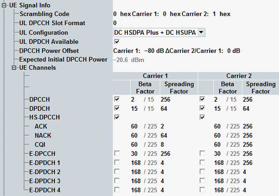

The "UE Signal Info" parameters describe properties of the measured uplink WCDMA signal that the R&S CMW needs for synchronization and decoding. Most settings in this section are common measurement settings. The most of parameters have the same value in all WCDMA TX measurements (e.g. DPCCH open loop power measurement and multi-evaluation measurement).
While the combined signal path scenario is active, these parameters are controlled by the signaling application.
For description of common parameters refer to the multi-evaluation measurement, see "UE Signal Info".

In addition to the common parameters, the following settings are specific for DPCCH open loop power measurements.
Displays the value for the initial DPCCH power of the UE in CELL_DCH, signaled in IE uplink DPCH power control info.
Individual values can be set per carrier in a dual uplink carrier configuration.
This parameter is relevant in the combined signal path (CSP) scenario only. It is controlled by the signaling application.
Remote command:Displays the expected power of the first DPCCH received from the UE in CELL_DCH. The value is calculated as follows (see also 3GPP TS 25.331):
Expected_Initial_DPCCH_Power = "DPCCH Power Offset" CPICH_RSCP,
Where the CPICH_RSCP value is measured by the UE.
This parameter is relevant in the combined signal path (CSP) scenario only. It is controlled by the signaling application.
Remote command: